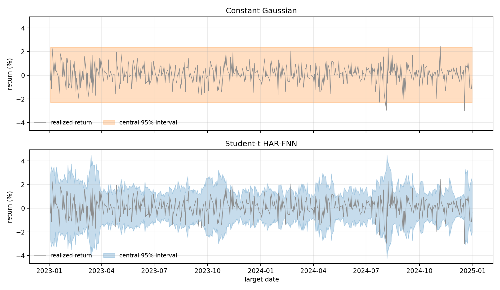
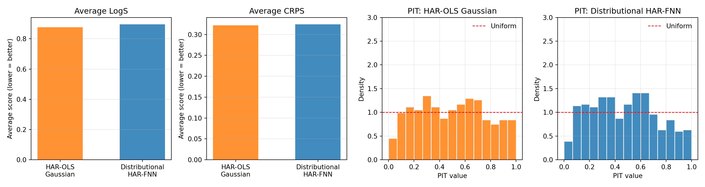

Under active development. A stable version is expected in November 2026. Feedback is welcome by email or via GitHub issues.
9 Distributional Neural Networks
9.1 Overview
In many economic and financial applications, the signal-to-noise ratio is low, and decisions depend on the entire forecast distribution, not just a single point estimate. A central bank may care about downside inflation risk, a financial economist may care about the left tail of returns, and a risk manager may care about the probability of a large loss. A neural network trained with mean squared error can be useful for estimating a conditional mean, \(\mathbb{E}[y \mid x]\), but it does not by itself provide a calibrated predictive distribution.
Distributional neural networks address this by reframing the prediction problem. Instead of predicting a single number, the network predicts the parameters of a full conditional distribution. This connects the neural-network chapters back to the earlier chapters on information theory and evaluating predictive distributions: likelihood-based training corresponds to the log score, and alternative proper scoring rules such as the CRPS can also be used when we want different sensitivity to tails or outliers. The broader literature on probabilistic forecasting and its evaluation is reviewed in Gneiting and Katzfuss (2014).
9.2 Roadmap
- We first contrast point-prediction networks with distributional networks.
- We then connect negative log-likelihood training to cross-entropy, KL divergence, and proper scoring rules.
- Next, we study Gaussian distributional networks and the instability that arises when mean and variance are trained jointly.
- We use Hemisphere Neural Networks as a case study for stabilizing distributional estimation in macro-financial settings.
- We close with Mixture Density Networks for richer conditional distributions, followed by key takeaways and common pitfalls.
9.3 From Point Forecasts to Predictive Distributions
As discussed in the Feed-Forward Neural Networks chapter, a standard neural network trained with mean squared error produces a point forecast:
- Traditional NN Output: \(\hat{y} = f_\theta(\mathbf{x})\)
- Distributional NN Output: \(p_\phi(y \mid \mathbf{x}) = p(y \mid \boldsymbol{\eta}_\phi(\mathbf{x}))\), where \(\boldsymbol{\eta}_\phi(\mathbf{x})\) are the distribution parameters learned by the network.
The distributional version replaces the scalar output by one or more output heads that map features into distributional parameters. For example, a Gaussian distributional network can produce a conditional mean and variance, while a Student-t network can additionally produce a degrees-of-freedom parameter. For the Gaussian case the parameter vector is \(\boldsymbol{\eta}_\phi(\mathbf{x})=(\mu(\mathbf{x}),\log\sigma^2(\mathbf{x}))\) (equivalently \((\mu(\mathbf{x}),\sigma^2(\mathbf{x}))\)), so the scalar heads \(\mu_t\) and \(\sigma_t^2\) that appear later are recognizably its components.
The model is typically trained by maximizing the log-likelihood of the data, which is equivalent to minimizing the negative log-likelihood loss:
\[ \mathcal{L}(\phi) = -\sum_{i=1}^n \log p(y_i \mid \mathbf{x}_i; \boldsymbol{\eta}_\phi(\mathbf{x}_i)) \]
Here, \(y_i\) is the observed outcome, \(\mathbf{x}_i\) is the feature vector, \(\boldsymbol{\eta}_\phi(\mathbf{x}_i)\) denotes the distributional parameters implied by the neural network, and \(\phi\) collects all trainable network weights.
9.4 Training Scores and Information Theory
Information-theoretic interpretation
This NLL objective is the same cross-entropy loss we encountered in the MLE-as-KL discussion: minimizing it is equivalent to minimizing the KL divergence between the empirical data distribution and the network’s predicted distribution. Unlike a standard neural network trained with MSE, which only targets the conditional mean, a distributional network trained with NLL targets the full conditional density and therefore penalizes every aspect of distributional misspecification, including the tails.
The same logic can be stated in the language of proper scoring rules. The negative log-likelihood corresponds to the logarithmic score: after observing \(y_i\), the model is rewarded for assigning high density to the realized outcome. Minimizing average NLL is therefore the training analogue of minimizing the out-of-sample log score; see the discussion of LogS and CRPS in the Evaluating Predictive Distributions chapter.
Other proper scoring rules can also be used as training losses if they are computable and differentiable for the chosen predictive family. For example, the continuous ranked probability score (CRPS) compares the full predictive CDF to the realized outcome. The choice of training score should match the forecasting object: log-likelihood is very sensitive to tail misspecification and extreme observations, while CRPS often behaves more like an integrated distributional error.
Question for Reflection
You fit a Gaussian distributional network by maximum likelihood for daily stock returns. The in-sample log-likelihood is high, but the realized PIT histogram from Chapter 3 is U-shaped. Which component of the model, the mean head, the variance head, or the distributional family itself, is most likely the problem, and why?
Suggested Answer
A U-shaped PIT histogram means the forecast density is too narrow: realizations fall in the tails of the predictive distribution more often than the model expects. The mean head is unlikely to be the culprit, because mean misspecification would shift PIT mass to one side rather than push it toward both tails. The variance head may be part of the issue if it systematically underestimates dispersion, but the more fundamental problem is usually the Gaussian family itself: daily stock returns have heavier tails than any Gaussian, regardless of how the conditional variance is parameterized. The natural fix, discussed later in the chapter, is to move to a Student-\(t\) or mixture-density output.
For dependent data, this does not require an iid assumption. In a time-series setting, we would usually maximize a conditional log-likelihood of the form
\[ \sum_{t=1}^{T} \log p_\phi(y_t \mid \mathcal{F}_{t-1}), \]
where \(\mathcal{F}_{t-1}\) is the information set available at the forecast origin. Equivalently, for one-step-ahead notation one can write \(\sum_{t=0}^{T-1}\log p_\phi(y_{t+1}\mid\mathcal{F}_t)\). The sum remains the correct criterion when the conditional distribution is specified relative to the appropriate filtration.
Link to Predictive-Distribution Evaluation
Training a distributional neural network and evaluating a distributional forecast are two sides of the same problem. During training, a proper scoring rule defines the loss. During evaluation, the same class of scores can be used out of sample to compare predictive distributions.
9.5 A Case Study: Hemisphere Neural Networks (HNN)
A key challenge in distributional modeling is reliably estimating multiple distribution parameters at once. Consider the Gaussian case where we want to learn both the conditional mean and variance:
\[ y_{t+1}\,|\,\mathbf{x}_t \sim \mathcal{N}\big(\mu_t, \sigma_t^2\big),\quad \mu_t = f_{\phi_\mu}(\mathbf{x}_t),\ \ \sigma_t^2 = g_{\phi_\sigma}(\mathbf{x}_t)>0 \]
The per-time-step negative log-likelihood loss is (up to constants):
\[ \ell_t(\phi_\mu,\phi_\sigma)= \frac{(y_{t+1}-f_{\phi_\mu}(\mathbf{x}_t))^2}{g_{\phi_\sigma}(\mathbf{x}_t)} + \log g_{\phi_\sigma}(\mathbf{x}_t) \]
In overparameterized models, jointly training \(\mu_t\) and \(\sigma_t^2\) by MLE can be unstable. The model can achieve a low loss by letting the mean network overfit, which drives residuals and therefore the fitted variance toward zero, or by letting the variance network absorb too much variation. This is a distributional overfitting problem: the model has to learn both the location and the uncertainty, and the two tasks can interfere with each other.
The Hemisphere Neural Network (HNN) architecture, proposed by Goulet Coulombe, Frenette, and Klieber (2026), is designed to stabilize this process.
HNN Architecture
The architecture splits the network after a shared “common core” into two specialized “hemispheres” — one for the mean and one for the variance.
- Common Core: A set of shared layers that learn a common representation. This allows latent drivers to influence both the mean and variance, creating an implicit link similar to ARCH or volatility-in-mean effects.
- Mean Hemisphere: A dedicated set of layers with a linear output head to predict \(\mu_t\).
- Variance Hemisphere: A dedicated set of layers with a
softplusoutput head — the softplus transform \(\zeta(z)=\log(1+e^{z})>0\) (introduced in the Feed-Forward Neural Networks chapter), which maps any real pre-activation to a positive value — to ensure the predicted variance \(\sigma_t^2\) is always positive.
The resulting architecture is illustrated in Figure 9.1.
This structure allows the model to learn both reactive volatility (where variance spikes after shocks, like in GARCH) and proactive volatility (where variance rises before shocks, based on leading indicators in \(\mathbf{x}_t\)). The econometric intuition is that some variables may move the conditional mean, some may move conditional uncertainty, and some may affect both.
Stabilizing Joint MLE in Practice
The HNN framework introduces two key ingredients to discipline the unstable MLE procedure:
Volatility-Emphasis Constraint: By the law of total variance,
\[ \operatorname{Var}(y_{t+1}) = \mathbb{E}\bigl[\operatorname{Var}(y_{t+1}\mid \mathbf{x}_t)\bigr] + \operatorname{Var}\bigl(\mathbb{E}[y_{t+1}\mid \mathbf{x}_t]\bigr), \]
so the average conditional variance is strictly less than the unconditional variance whenever the conditional mean varies with the predictors. The HNN constraint anchors the empirical average of conditional variances to a fraction of the unconditional variance:
\[ \frac{1}{T}\sum_t g_{\phi_\sigma}(\mathbf{x}_t) \approx \kappa\cdot \operatorname{Var}(y_{t+1}), \qquad 0 < \kappa < 1. \]
The multiplier \(\kappa\) is calibrated from out-of-bag residuals of a non-distributional baseline. The constraint regularizes the variance hemisphere away from zero and prevents it from absorbing predictable variation that should be explained by the mean hemisphere.
Blocked Subsampling (Time-Aware Bagging): The model is trained many times on different, non-overlapping time blocks (“bags”). The final predictions for \(\mu_t\) and \(\sigma_t^2\) are formed by averaging the predictions from models where time \(t\) was held out-of-bag. This stabilizes the predictions and makes them robust to initialization.
Practical Design Choices and Extensions
- Hyperparameters: A typical HNN might use 2 hidden layers for the core and 2 for each hemisphere, with ReLU activations, Adam optimization, and dropout.
- Beyond Gaussian: The hemisphere approach can be extended to other distributions (e.g., Student-t) by adding a third hemisphere for the degrees of freedom parameter, \(\nu\). Since \(\nu>0\) is required, this head needs its own positivity transform on its output (e.g., a softplus head), just like the scale parameter.
- Temporal Dynamics: To capture GARCH-like effects more directly, lagged outcomes or squared residuals can be included as features in \(\mathbf{x}_t\). For more complex sequences, the common core could be an LSTM.
9.6 Handling Complex Distributions: Mixture Density Networks (MDNs)
For distributions that are skewed, fat-tailed, or multi-modal, a single parametric form is too restrictive. Mixture Density Networks (MDNs) proposed by Bishop (1994) address this by modeling the conditional distribution as a mixture of simpler ones, like Gaussians:
\[ p(y \mid \mathbf{x})=\sum_{k=1}^K \pi_k(\mathbf{x})\,\mathcal{N}\!\big(y;\,\mu_k(\mathbf{x}),\,\sigma_k^2(\mathbf{x})\big) \]
The network has three output heads to predict the parameters for all \(K\) components:
- Mixing Weights \(\pi_k(\mathbf{x})\): A
softmaxlayer over the \(K\) components, \(\pi_k(\mathbf{x})=\exp(a_k(\mathbf{x}))/\sum_{j=1}^K \exp(a_j(\mathbf{x}))\), so \(\pi_k>0\) and \(\sum_{k=1}^K\pi_k=1\), where \(K\) indexes the mixture components. This ensures the weights are positive and sum to 1. - Means \(\mu_k(\mathbf{x})\): A linear layer.
- Standard Deviations \(\sigma_k(\mathbf{x})\): A
softpluslayer ensures positivity.
MDNs are particularly useful for modeling phenomena with distinct underlying states or regimes, which can lead to multi-modal distributions. Examples include:
- Multi-modal inflation distributions (e.g., a low-inflation vs. a high-inflation regime).
- Asset returns with regime switching behavior.
- Labor market dynamics that might feature multiple equilibria.
MDNs are difficult to train. Components can collapse, with one component dominating; and the likelihood can blow up when any \(\sigma_k\) approaches zero. Standard remedies are careful initialization, regularization of the mixing weights, and a positive floor on \(\sigma_k\).
Econometric Interpretation
An MDN is a flexible way to approximate a conditional density with latent regimes. It should not automatically be interpreted as a structural regime-switching model: the mixture components are learned predictive components unless additional economic restrictions are imposed.
9.7 Empirical Application: Distributional Network for SPY Realized Variance
The SPY realized-volatility illustration produced point forecasts of \(\log RV_{t+1}\) and evaluated them with squared and absolute losses. To turn that exercise into a density forecast and evaluate it with the proper scoring rules of Chapter 3, we need a conditional variance as well. We compare two Gaussian density forecasts on the same SPY data, the same log-HAR features, and the same chronological split.1
The HAR-OLS Gaussian baseline sets the conditional mean to the linear HAR-OLS fit in log space — that is, a regression of \(\log RV_{t+1}\) on \(\log RV_t\), \(\log\big(\tfrac{1}{5}\sum_{j=0}^{4} RV_{t-j}\big)\), and \(\log\big(\tfrac{1}{21}\sum_{j=0}^{20} RV_{t-j}\big)\). The conditional variance is the in-sample residual variance from the same fit and stays constant over the test block. This baseline is homoskedastic in log-RV space.
The Gaussian distributional HAR-FNN uses the same three log-HAR inputs but routes them through a single hidden layer with 32 softplus units, followed by two output heads: a linear mean head \(\mu_\phi(\mathbf{x}_t)\) and a linear log-variance head \(\eta_\phi(\mathbf{x}_t)\), with predictive variance \(\sigma_\phi^2(\mathbf{x}_t)=\max\{\exp(\eta_\phi(\mathbf{x}_t)),c\}\) for a small floor \(c\). Here we parameterize positivity through the log-variance, \(\sigma^2(\mathbf{x})=\exp(\eta_\phi(\mathbf{x}))\) (an alternative to the softplus head above); both guarantee \(\sigma^2>0\). The two heads share the hidden representation, in the spirit of the HNN common core in Section 9.5 but without the volatility-emphasis constraint or blocked subsampling. The model is trained by minimizing the Gaussian negative log likelihood, which by the discussion in Section 9.4 is the neural-network analogue of minimizing the average log score on the training block. Both forecasts are then evaluated on the held-out test block using LogS, CRPS, and PIT, exactly as in ?@sec-eval-dist-empirical.
Show the code
import os
os.environ["KERAS_BACKEND"] = "tensorflow"
os.environ["TF_CPP_MIN_LOG_LEVEL"] = "3"
import random
import numpy as np
import pandas as pd
import keras
from keras import layers, ops
from sklearn.linear_model import LinearRegression
from scipy.stats import norm
import properscoring as ps
import matplotlib.pyplot as plt
random.seed(0)
np.random.seed(0)
keras.utils.set_random_seed(0)
rv = (
pd.read_csv("data/taq_spy/SPY_daily_measures.csv", parse_dates=["date"])
.sort_values("date")
.loc[:, ["date", "rv"]]
.dropna()
)
rv = rv.loc[rv["rv"] > 0].reset_index(drop=True)
window = 22
def make_log_har(rv_arr):
X, y, idx = [], [], []
for end in range(window - 1, len(rv_arr) - 1):
X.append(np.log([
rv_arr[end],
rv_arr[end - 4 : end + 1].mean(),
rv_arr[end - 20 : end + 1].mean(),
]))
y.append(np.log(rv_arr[end + 1]))
idx.append(end + 1)
return np.asarray(X), np.asarray(y), np.asarray(idx)
X, y, target_idx = make_log_har(rv["rv"].to_numpy())
dates = rv.loc[target_idx, "date"].reset_index(drop=True)
n = len(y)
split_valid = int(0.80 * n)
X_trva, y_trva = X[:split_valid], y[:split_valid]
X_te, y_te = X[split_valid:], y[split_valid:]
dates_te = dates.iloc[split_valid:].reset_index(drop=True)
x_center = X_trva.mean(axis=0)
x_scale = X_trva.std(axis=0)
y_center = float(y_trva.mean())
y_scale = float(y_trva.std())
Xs_trva = (X_trva - x_center) / x_scale
ys_trva = (y_trva - y_center) / y_scale
Xs_te = (X_te - x_center) / x_scale
print(f"forecast origins: {n}, train+valid: {split_valid}, test: {n - split_valid}")forecast origins: 2429, train+valid: 1943, test: 486Show the code
print(f"test window: {dates_te.iloc[0].date()} to {dates_te.iloc[-1].date()}")test window: 2022-10-25 to 2024-12-31The make_log_har helper builds the same three HAR averages used in the chapter 8 illustration but applies \(\log(\cdot)\) before standardization, so the linear baseline is a log-log HAR regression and the FNN inputs are on the same scale. We standardize features and the target on the train+validation block, which avoids leaking test-block information into the scaling constants.
The Gaussian baseline is just OLS plus an in-sample residual variance.
Show the code
ols = LinearRegression().fit(X_trva, y_trva)
mu_ols_te = ols.predict(X_te)
resid_trva = y_trva - ols.predict(X_trva)
sigma_ols = float(np.std(resid_trva, ddof=1))
sigma_ols_te = np.full_like(mu_ols_te, sigma_ols)The distributional HAR-FNN has two heads on top of a shared hidden layer. The custom loss implements the per-observation Gaussian NLL of Section 9.4, with a variance floor that prevents the log-variance head from producing a degenerate density when residuals are near zero (the pathology analyzed in Exercise 9.1).
Show the code
VAR_FLOOR = 1e-3
def make_dist_har_fnn(n_neurons=32, learning_rate=1e-3):
inputs = keras.Input(shape=(3,))
h = layers.Dense(n_neurons, activation="softplus")(inputs)
mu_head = layers.Dense(1)(h)
log_var_head = layers.Dense(1)(h)
outputs = layers.Concatenate()([mu_head, log_var_head])
model = keras.Model(inputs, outputs, name="DistHARFNN")
def gaussian_nll(y_true, y_pred):
mu = y_pred[..., 0:1]
log_var = y_pred[..., 1:2]
var = ops.maximum(ops.exp(log_var), VAR_FLOOR)
return 0.5 * (ops.log(2.0 * np.pi * var) + ops.square(y_true - mu) / var)
model.compile(loss=gaussian_nll, optimizer=keras.optimizers.Adam(learning_rate))
return model
dist_model = make_dist_har_fnn(n_neurons=32, learning_rate=1e-3)
dist_model.fit(
Xs_trva, ys_trva.reshape(-1, 1),
epochs=200, batch_size=32, verbose=0, shuffle=False,
)<keras.src.callbacks.history.History object at 0x300ce8440>Show the code
pred_std = dist_model.predict(Xs_te, verbose=0)
mu_std, log_var_std = pred_std[:, 0], pred_std[:, 1]
mu_dist_te = mu_std * y_scale + y_center
var_dist_te = np.maximum(np.exp(log_var_std), VAR_FLOOR) * (y_scale ** 2)
sigma_dist_te = np.sqrt(var_dist_te)Because the network is trained on the standardized target \(\tilde y_t = (y_t-\bar y)/s_y\), the head \(\eta_\phi\) predicts the log of the conditional variance of \(\tilde y\). Linear standardization is variance-equivariant: \(\operatorname{Var}(y\mid \mathbf{x}) = s_y^2 \cdot \operatorname{Var}(\tilde y\mid \mathbf{x})\), so the back-transformed predictive variance is \(\exp(\eta_\phi(\mathbf{x}_t)) \cdot s_y^2\). This identity is specific to linear scaling of the target. If the target itself were log-transformed (as with \(z_t=\log RV_t\) in the previous chapter), back-transforming a Gaussian predictive density in \(z\) to a density in \(RV\) would require the lognormal moment identity \(\mathbb{E}[RV] = \exp(\mu + \sigma^2/2)\) instead. Kleen (2024) shows that under LogS, CRPS, the quadratic score, and the pseudo-spherical score, model rankings are invariant under linear rescaling of the data. Two models trained on the standardized target can therefore be compared on the standardized scale without back-transformation. The transformation matters only for comparisons against forecasts produced on the unstandardized scale, where absolute score values enter.
Show the code
logs_ols = -norm.logpdf(y_te, mu_ols_te, sigma_ols_te)
logs_dist = -norm.logpdf(y_te, mu_dist_te, sigma_dist_te)
crps_ols = np.array([ps.crps_gaussian(y, mu=m, sig=s)
for y, m, s in zip(y_te, mu_ols_te, sigma_ols_te)])
crps_dist = np.array([ps.crps_gaussian(y, mu=m, sig=s)
for y, m, s in zip(y_te, mu_dist_te, sigma_dist_te)])
pit_ols = norm.cdf(y_te, mu_ols_te, sigma_ols_te)
pit_dist = norm.cdf(y_te, mu_dist_te, sigma_dist_te)
scores = pd.DataFrame({
"model": ["HAR-OLS Gaussian", "Distributional HAR-FNN"],
"mean_LogS": [logs_ols.mean(), logs_dist.mean()],
"mean_CRPS": [crps_ols.mean(), crps_dist.mean()],
})
scores.round(4) model mean_LogS mean_CRPS
0 HAR-OLS Gaussian 0.9091 0.3335
1 Distributional HAR-FNN 0.9259 0.3351Show the code
fig, axes = plt.subplots(2, 1, figsize=(11, 6.4), sharex=True)
for ax, mu, sig, label, color in zip(
axes,
[mu_ols_te, mu_dist_te],
[sigma_ols_te, sigma_dist_te],
["HAR-OLS Gaussian", "Distributional HAR-FNN"],
["C1", "C0"],
):
ax.plot(dates_te, y_te, color="0.55", linewidth=0.9, label="realized log RV")
ax.plot(dates_te, mu, color=color, linewidth=1.1, label=f"{label} mean")
ax.fill_between(dates_te, mu - 1.96 * sig, mu + 1.96 * sig,
color=color, alpha=0.20, label="95% band")
ax.set_ylabel("log RV")
ax.set_title(label)
ax.legend(frameon=False, loc="upper right", ncol=3, fontsize=9)
ax.grid(True, alpha=0.25)
axes[1].set_xlabel("Date")
plt.tight_layout()
plt.show()
The two predictive bands give the first part of the story directly. The HAR-OLS Gaussian band is a parallel pair of lines: a single training-block residual variance is replayed at every test-block date, so the forecast distribution is just a translated copy of the same bell curve. The distributional HAR-FNN band tightens in quiet stretches where the HAR averages are small and widens in stress periods. The variance head has clearly learned a conditional scale.
Show the code
fig, (ax_bar, ax_pit_ols, ax_pit_dist) = plt.subplots(1, 3, figsize=(13, 4))
labels = ["HAR-OLS\nGaussian", "Distributional\nHAR-FNN"]
xpos = np.arange(len(labels))
width = 0.35
ax_bar.bar(xpos - width / 2, [logs_ols.mean(), logs_dist.mean()],
width, label="LogS", color=["C1", "C0"], alpha=0.85)
ax_bar.bar(xpos + width / 2, [crps_ols.mean(), crps_dist.mean()],
width, label="CRPS", color=["C1", "C0"], alpha=0.45, hatch="//")
ax_bar.set_xticks(xpos)
ax_bar.set_xticklabels(labels)
ax_bar.set_ylabel("Average score (lower = better)")
ax_bar.set_title("Average Scores")
ax_bar.legend(frameon=False)
ax_bar.grid(True, axis="y", alpha=0.3)
bins = np.linspace(0, 1, 16)
for ax, pit_vals, title, color in zip(
[ax_pit_ols, ax_pit_dist],
[pit_ols, pit_dist],
["PIT: HAR-OLS Gaussian", "PIT: Distributional HAR-FNN"],
["C1", "C0"],
):
ax.hist(pit_vals, bins=bins, density=True, color=color,
edgecolor="white", alpha=0.85)
ax.axhline(1.0, color="red", linestyle="--", linewidth=1, label="Uniform")
ax.set_xlabel("PIT value")
ax.set_ylabel("Density")
ax.set_title(title)
ax.set_ylim(0, 3.0)
ax.legend(frameon=False)
ax.grid(True, alpha=0.25)
plt.tight_layout()
plt.show()
The averages and PITs in Figure 9.3 give the second part: scoring rules and calibration diagnostics do not point to the same winner. Despite the visible time variation in the predictive variance, the distributional HAR-FNN does not beat the homoskedastic baseline on either LogS or CRPS — the two scores are within rounding of each other, with the distributional model marginally worse. The PIT histograms are also broadly similar: both are roughly flat, with the distributional FNN reducing the mild edge mass at the price of a slightly bumpier interior.
This is the empirical counterpart to the joint-training concern in Section 9.5. The log-HAR residuals on this sample are close to homoskedastic, so a constant-variance forecast is already a strong baseline. Adding a flexible variance head with a shared hidden core, but no further discipline, does not reliably translate the learned conditional scale into a better density forecast: the joint maximum-likelihood objective lets the mean and variance heads trade off against each other in ways that need not improve out-of-sample log score. The Hemisphere Neural Network architecture introduces the volatility-emphasis constraint and blocked subsampling precisely to overcome this difficulty, so applying HNN here would be a natural next step.
The methodological lesson is that no single diagnostic suffices. A practitioner who reads only the score table might conclude that the variance head has learned nothing — in fact, it has learned a sensible conditional scale. A practitioner who reads only the predictive band might conclude that the distributional model is clearly better — in fact, the score and PIT diagnostics show no improvement. Only the combination of Figure 9.2 and Figure 9.3 reveals both what the model does and what it achieves on the proper scoring rules that motivate distributional forecasting.
9.8 Summary
Key Takeaways
- Distributional neural networks predict parameters of a conditional distribution rather than only a point forecast.
- Negative log-likelihood training is the neural-network version of log-score minimization and links directly to cross-entropy and KL divergence.
- Other proper scoring rules, such as CRPS, can be used when they better match the desired forecast-evaluation criterion and are differentiable for the chosen model.
- Jointly estimating conditional means and variances can be unstable in overparameterized networks because the mean and variance heads can substitute for each other.
- Hemisphere Neural Networks stabilize Gaussian distributional learning by separating mean and variance heads after a shared representation.
- Mixture Density Networks allow richer shapes such as skewness, fat tails, and multiple modes, but introduce additional training and interpretation challenges.
Common Pitfalls
- Treating a distributional network as calibrated merely because it outputs a density.
- Forgetting that variance or scale outputs must be constrained to be positive, for example with a softplus transformation or a variance floor.
- Interpreting mixture components as economic regimes without additional identifying restrictions.
- Optimizing in-sample log-likelihood while ignoring out-of-sample calibration, PIT behavior, CRPS, or tail performance.
- Using a very flexible distributional architecture in a small macroeconomic sample without strong validation or regularization.
9.9 Exercises
Exercise 9.1: Why Joint Gaussian NLL Training Can Be Ill-Posed
Consider a Gaussian distributional model for one-step-ahead forecasting. Maximizing the likelihood is equivalent to maximizing the log-likelihood, which in turn is equivalent to minimizing the negative log-likelihood. We therefore work with the per-observation Gaussian negative log-likelihood, up to an additive constant,
\[ \ell(e_t,\sigma_t^2)=\frac{1}{2}\log(\sigma_t^2)+\frac{e_t^2}{2\sigma_t^2}, \qquad e_t=y_{t+1}-\mu_t,\qquad \sigma_t^2>0. \]
- For fixed \(e_t \neq 0\), derive the value of \(\sigma_t^2\) that minimizes \(\ell(e_t,\sigma_t^2)\). Verify that this critical point is a minimum.
- Show that if \(e_t=0\), then the infimum of \(\ell(e_t,\sigma_t^2)\) over \(\sigma_t^2>0\) equals \(-\infty\) and is not attained at any finite variance value.
- Suppose an overparameterized mean network interpolates the training sample exactly, so that \(e_t=0\) for all \(t=1,\dots,T\), and the variance head can choose each \(\sigma_t^2\) freely. Show that the sample Gaussian NLL has no finite minimizer.
- Suppose instead that the model imposes a variance floor \(\sigma_t^2 \ge c\) for some constant \(c>0\). Solve the constrained minimization problem for one observation and show that the optimal variance is \[ \sigma_t^{2\ast}=\max\{e_t^2,c\}. \] Explain briefly why this removes the pathology from Part 3, but does not by itself guarantee good out-of-sample calibration.
Exam level. Parts 2-4 are meant to test whether students understand the instability behind joint mean-variance training rather than just the Gaussian likelihood formula itself.
Hint for Part 1
Differentiate \(\ell(e_t,\sigma_t^2)\) with respect to \(\sigma_t^2\) and set the derivative equal to zero. Then check the second derivative at the critical point.
Hint for Part 2
Substitute \(e_t=0\) into the objective. Then ask what happens as \(\sigma_t^2 \downarrow 0\).
Hint for Part 3
Write the sample NLL as a sum of the one-observation objectives from Part 2.
Hint for Part 4
First solve the unconstrained problem from Part 1. Then check whether that solution satisfies the inequality constraint \(\sigma_t^2 \ge c\).
Solution
Part 1
Differentiate with respect to \(\sigma_t^2\):
\[ \frac{\partial \ell}{\partial \sigma_t^2} = \frac{1}{2\sigma_t^2}-\frac{e_t^2}{2(\sigma_t^2)^2}. \]
Setting this equal to zero gives
\[ \frac{1}{2\sigma_t^2}=\frac{e_t^2}{2(\sigma_t^2)^2} \quad\Longrightarrow\quad \sigma_t^2=e_t^2. \]
To verify that this is a minimum, compute the second derivative:
\[ \frac{\partial^2 \ell}{\partial (\sigma_t^2)^2} = -\frac{1}{2(\sigma_t^2)^2}+\frac{e_t^2}{(\sigma_t^2)^3}. \]
Evaluating at \(\sigma_t^2=e_t^2\) yields
\[ \frac{\partial^2 \ell}{\partial (\sigma_t^2)^2}\Big|_{\sigma_t^2=e_t^2} = \frac{1}{2e_t^4}>0. \]
Hence the minimizer for fixed \(e_t\neq 0\) is \(\sigma_t^2=e_t^2\).
Part 2
If \(e_t=0\), then
\[ \ell(0,\sigma_t^2)=\frac{1}{2}\log(\sigma_t^2). \]
As \(\sigma_t^2 \downarrow 0\),
\[ \frac{1}{2}\log(\sigma_t^2)\to -\infty. \]
Therefore the infimum of the objective is \(-\infty\). However, no finite positive value of \(\sigma_t^2\) attains this infimum, so the problem has no minimizer.
Part 3
If the mean network interpolates the training sample exactly, then \(e_t=0\) for all \(t\). The sample objective is
\[ \sum_{t=1}^{T}\ell(0,\sigma_t^2)=\frac{1}{2}\sum_{t=1}^{T}\log(\sigma_t^2). \]
By sending each \(\sigma_t^2\) arbitrarily close to zero, this sum can be made arbitrarily negative. Hence the training Gaussian NLL has no finite minimizer. This is the basic ill-posedness behind unstable joint training of very flexible mean and variance networks.
Part 4
From Part 1, the unconstrained minimizer is \(\sigma_t^2=e_t^2\). Under the constraint \(\sigma_t^2\ge c\), there are two cases:
- If \(e_t^2\ge c\), the unconstrained optimum is feasible, so \(\sigma_t^{2\ast}=e_t^2\).
- If \(e_t^2<c\), the unconstrained optimum violates the constraint, so the constrained optimum lies at the boundary, \(\sigma_t^{2\ast}=c\).
Therefore
\[ \sigma_t^{2\ast}=\max\{e_t^2,c\}. \]
This removes the pathology from Part 3 because even if \(e_t=0\), the smallest admissible variance is now \(c\), so the objective cannot be driven to \(-\infty\) by shrinking the variance to zero. But this does not guarantee good out-of-sample calibration: a variance floor prevents a mathematical degeneracy, yet the learned variance process can still be badly misspecified for future data.
Exercise 9.2: Moment-Matched Gaussian Forecasts versus MDNs
Consider the symmetric two-component conditional density
\[ f_M(y\mid \mathbf{x}_t) = \frac{1}{2}\,\varphi(y;-m_t,s^2)+\frac{1}{2}\,\varphi(y;m_t,s^2), \qquad m_t>0,\ s>0, \]
where \(\varphi(y;\mu,\sigma^2)\) denotes the Gaussian density with mean \(\mu\) and variance \(\sigma^2\).
Now consider the Gaussian forecast
\[ f_G(y\mid \mathbf{x}_t)=\varphi(y;0,m_t^2+s^2), \]
which matches the first two moments of \(f_M\).
- Derive the conditional mean and conditional variance of \(f_M(y\mid \mathbf{x}_t)\) and verify that \(f_G\) indeed matches these two moments.
- Show that the point forecast that minimizes conditional MSE under both \(f_M\) and \(f_G\) is zero. Explain why an MSE comparison cannot distinguish these two forecast distributions.
- Evaluate both densities at the realized outcome \(y_{t+1}=m_t\): \[ f_M(m_t\mid \mathbf{x}_t) \qquad\text{and}\qquad f_G(m_t\mid \mathbf{x}_t). \] Show that as \(m_t/s \to \infty\), the mixture density at \(y_{t+1}=m_t\) stays bounded away from zero, while the Gaussian density goes to zero. Conclude that LogS can strongly prefer the MDN-style forecast even when MSE cannot distinguish the two models.
- Show formally that swapping the labels of the two mixture components leaves \(f_M(y\mid \mathbf{x}_t)\) unchanged. Explain why this means that mixture components are not structurally identified without additional restrictions.
Exam level. The point of this exercise is that matching means and variances is not enough to match the predictive distribution, and that distributional scores can detect this while MSE cannot.
Hint for Part 1
Use the symmetry of the mixture. For the variance, compute \(\mathbb{E}[y_{t+1}^2\mid \mathbf{x}_t]\) first.
Hint for Part 2
Recall that under squared-error loss, the optimal point forecast is the conditional mean.
Hint for Part 3
For the mixture density, plug \(y=m_t\) into both Gaussian components. For the Gaussian forecast, plug \(y=m_t\) into the density with variance \(m_t^2+s^2\) and then study the limit as \(m_t/s\to\infty\).
Hint for Part 4
Write the mixture once as
\[ \frac{1}{2}\varphi(y;-m_t,s^2)+\frac{1}{2}\varphi(y;m_t,s^2) \]
and once with the two terms reversed.
Solution
Part 1
By symmetry,
\[ \mathbb{E}[y_{t+1}\mid \mathbf{x}_t] = \frac{1}{2}(-m_t)+\frac{1}{2}(m_t)=0. \]
For the second moment,
\[ \mathbb{E}[y_{t+1}^2\mid \mathbf{x}_t] = \frac{1}{2}(m_t^2+s^2)+\frac{1}{2}(m_t^2+s^2) = m_t^2+s^2. \]
Hence
\[ \operatorname{Var}(y_{t+1}\mid \mathbf{x}_t) = \mathbb{E}[y_{t+1}^2\mid \mathbf{x}_t] - \big(\mathbb{E}[y_{t+1}\mid \mathbf{x}_t]\big)^2 = m_t^2+s^2. \]
The Gaussian forecast \(f_G(y\mid \mathbf{x}_t)=\varphi(y;0,m_t^2+s^2)\) therefore matches the conditional mean and variance of the mixture forecast.
Part 2
Under squared-error loss, the optimal point forecast is the conditional mean. Since both forecast distributions have conditional mean zero, the MSE-optimal point forecast is
\[ \hat{y}_{t+1}=0. \]
Therefore an MSE comparison cannot distinguish the two forecast distributions: both imply exactly the same optimal point forecast, even though one forecast is bimodal and the other is unimodal.
Part 3
For the mixture density at \(y_{t+1}=m_t\),
\[ f_M(m_t\mid \mathbf{x}_t) = \frac{1}{2}\varphi(m_t;-m_t,s^2)+\frac{1}{2}\varphi(m_t;m_t,s^2). \]
Using the Gaussian density formula,
\[ f_M(m_t\mid \mathbf{x}_t) = \frac{1}{2}\frac{1}{\sqrt{2\pi}s}e^{-2m_t^2/s^2} + \frac{1}{2}\frac{1}{\sqrt{2\pi}s} = \frac{1}{2\sqrt{2\pi}s}\Big(1+e^{-2m_t^2/s^2}\Big). \]
For the Gaussian forecast,
\[ f_G(m_t\mid \mathbf{x}_t) = \frac{1}{\sqrt{2\pi(m_t^2+s^2)}}\exp\!\left(-\frac{m_t^2}{2(m_t^2+s^2)}\right). \]
As \(m_t/s\to\infty\), we have
\[ f_M(m_t\mid \mathbf{x}_t)\to \frac{1}{2\sqrt{2\pi}s}, \]
which is strictly positive, whereas
\[ f_G(m_t\mid \mathbf{x}_t) \sim \frac{e^{-1/2}}{\sqrt{2\pi}\,m_t}\to 0. \]
So when the realization lands near one of the two modes and the modes are well separated, the mixture forecast assigns much higher density to the realized value. Therefore the mixture forecast gets a much better LogS, even though MSE cannot distinguish it from the moment-matched Gaussian.
Part 4
If we swap the component labels, the predictive density becomes
\[ \frac{1}{2}\varphi(y;m_t,s^2)+\frac{1}{2}\varphi(y;-m_t,s^2), \]
which is exactly the same expression as the original density, just with the two terms reversed. Hence the predictive density is unchanged by relabeling the components.
This is the label-switching problem. It implies that the two mixture components are not structurally identified from predictive fit alone. To interpret them as economic regimes, one would need additional restrictions, theory, or identifying assumptions beyond the MDN likelihood.
9.10 References
Bishop, Christopher M. 1994. “Mixture Density Networks.” Technical Report NCRG/94/004. Birmingham, U.K.: Neural Computing Research Group, Aston University.
Gneiting, Tilmann, and Matthias Katzfuss. 2014. “Probabilistic Forecasting.” Annual Review of Statistics and Its Application 1: 125–51. https://doi.org/10.1146/annurev-statistics-062713-085831.
Goulet Coulombe, Philippe, Mikael Frenette, and Karin Klieber. 2026. “From Reactive to Proactive Volatility Modeling With Hemisphere Neural Networks.” Journal of Applied Econometrics 41 (3): 265–79. https://doi.org/10.1002/jae.70042.
Kleen, Onno. 2024. “Scaling and Measurement Error Sensitivity of Scoring Rules for Distribution Forecasts.” Journal of Applied Econometrics 39 (5): 833–49. https://doi.org/10.1002/jae.3056.
Footnotes
The data file
data/taq_spy/SPY_daily_measures.csvis documented in the dataset appendix. The pipeline below uses 22 trading days as the maximum lag through the monthly HAR average and forecasts \(\log RV_{t+1}\).↩︎